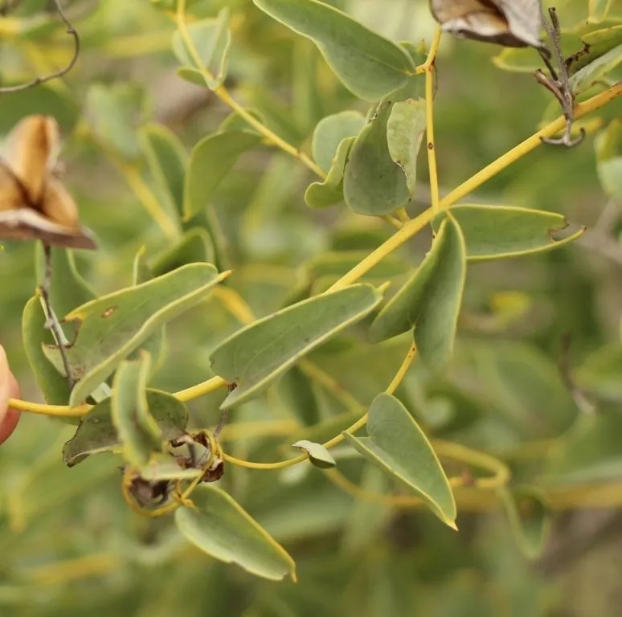

多肉植物 · 植物界
龟甲龙 Dioscorea elephantipes

薯蓣科薯蓣属多肉，基部膨大、树皮龟裂如龟甲，藤蔓心形叶，原产南非，是著名的块根多肉植物。
- 分类
- 门被子植物门纲单子叶植物纲目薯蓣目科薯蓣科属薯蓣属
- 栖息环境
- 南非开普省干旱地区的石质坡地与灌丛
- 地理分布
- 原产南非开普省，世界各地盆栽观赏
- 保护级别
- 暂无评估；CITES 附录Ⅱ
物种志
龟甲龙为薯蓣科薯蓣属的落叶藤本多肉，基部膨大呈半球形，直径可达 30–60 厘米，表面覆盖一层龟裂的木质化树皮，形似龟甲。每年旱季过后，从基部抽出细长藤蔓，叶片心形，长 2–5 厘米，互生，绿色。花小，黄绿色，雌雄异株，花期夏季；果实为蒴果，种子带翅。
龟甲龙原产南非开普省的干旱地区，喜阳光充足、温暖干燥和通风良好的环境，耐旱、怕积水和低温。它基部膨大、树皮龟裂，形似龟甲，是块根多肉中的代表种类。栽培用排水良好的颗粒土，生长季保持微润，夏季高温时落叶休眠、需控水，冬季保持 10℃ 以上；繁殖以播种为主，生长缓慢。
形态与习性
- 基部半球形，直径可达 30–60 厘米
- 树皮龟裂木质化，形似龟甲
- 叶片心形，长 2–5 厘米
- 花期夏季，花小、黄绿色
- 光照喜充足阳光
- 水分生长季微润，休眠期控水
- 土壤排水良好的颗粒土
- 繁殖播种为主，生长缓慢
趣味知识
- 龟甲龙的基部覆盖龟裂的木质树皮，形似龟甲，因此得名。
- 它夏季落叶休眠，靠膨大的基部储存水分和养分。
- 龟甲龙生长缓慢，基部直径长到 30 厘米需要很多年。